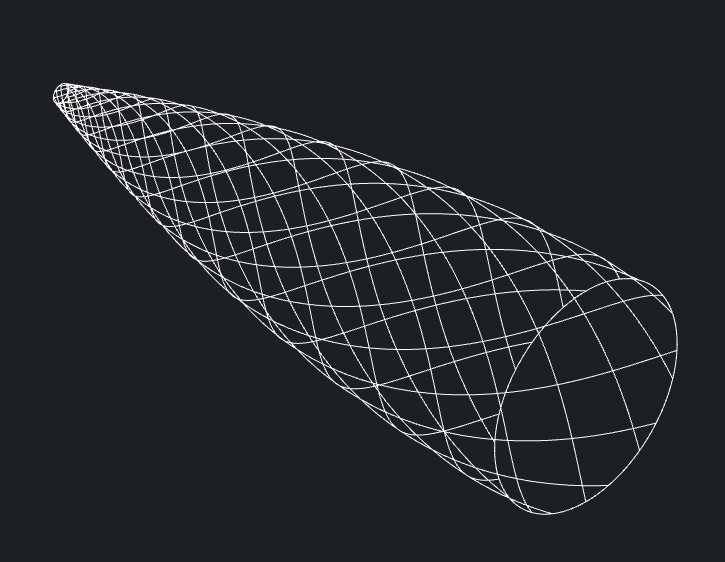

Filament winder build
Filament winder in action

Nosecone 55° layer gcode
For my university rocket team, I built a heavily modified
version of Andrew Reilley's Contraption filament winder as an Ender 3 conversion,
adding a fourth axis from the bed gantry, a huge gear reduction
replacing the belt drive to run large mandrels on a NEMA 17
instead of the designed NEMA 23, and some special configuration
of Marlin firmware to glue it all together.
Filament winder software
Since the associated plotting software was written in TypeScript (eww) and doesn't
suppport non-cylindrical mandrels such as nosecones, I rewrote
and extended the plotting code in Python.